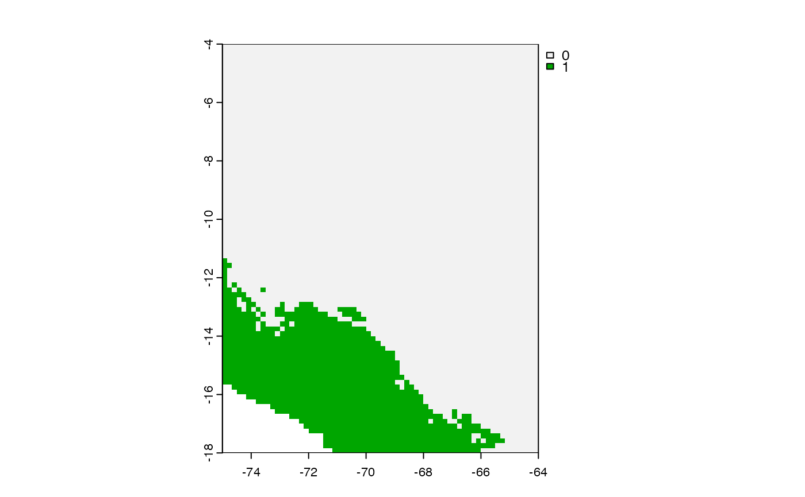

extrapolation_zones.RdMaps strict extrapolation zones
extrapolation_zones(M_calibra, G_transfer, as_vec = FALSE)An object of class SpatRaster or a matrix of predictors for the calibration area (M area in ENM context).
An object of class SpatRaster or a matrix of predictors for the transfer area
Logical. Whether return cell ids of extrapolating pixels or not
Returns a binary map showing strict extrapolation zones (ones). If the parameter as_vec is TRUE, the function return pixel ids of strict extrapolation.
# Predictors
m_path <- system.file("extdata/M_layers", package = "smop") |>
list.files(full.names=TRUE)
g_path <- system.file("extdata/G_layers", package = "smop") |>
list.files(full.names=TRUE)
M_calibra <- terra::rast(m_path)
G_transfer <- terra::rast(g_path)
extr_zones <- smop::extrapolation_zones(M_calibra = M_calibra,
G_transfer = G_transfer,
as_vec =FALSE)
terra::plot(extr_zones)

extr_zones_ids <- smop::extrapolation_zones(M_calibra = M_calibra,
G_transfer = G_transfer,
as_vec =TRUE)
head(extr_zones_ids)
#> [1] 2905 2971 2972 3037 3103 3169